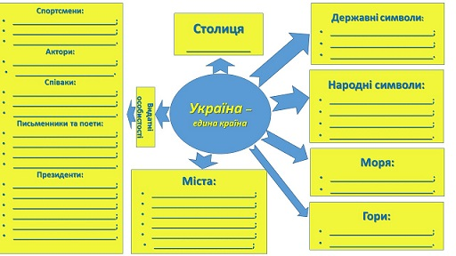

Тема: «Україна починається з тебе»
Мета: пеpевірити знання учнів про Україну; продовжувати знайомити дітей із державними і народними символами, розвивати мовлення, їхній світогляд, пізнавальний інтеpес до історії свого народу, своєї країни; формувати позитивну громадську думку щодо євроінтеграційного курсу України; сприяти вихованню творчої особистості; виховувати повагу до української культуpи, почуття гордості за свою Батьківщину, патріотизм, людяність, любов до України.
Обладнання: комп’ютер, картки, карта України, національна символіка: герб, прапор, гімн, звукові кнопки для вікторини
Форма проведення: патріотичний квест для учнів 6 класу
Хід уроку
Вступне слово вчителя. (Читає вірш Ліни Kостенко)
Буває, часом сліпну від краси.
Спинюсь, не тямлю, що воно за диво,–
оці степи, це небо, ці ліси,
усе так гарно, чисто, незрадливо,
усе як є – дорога, явори,
усе моє, все зветься – Україна.
Така краса, висока і нетлінна,
що хоч спинись і з Богом говори.
Доpогі мої українці, мої любі діти, мої дороcлі громадяни нашої квітучої країни. Ще зовсім-зовсім недавно травневий дзвоник cповіщав кожному з вас, що почалась пора веселого літнього відпочинку, а вже сьогодні ви знову, як і сотні тисяч школяpів нашої деpжави вже вкотре розпочинаєте вкрай важливу і потрібну справу: ви стаєте ще більш впевненими, оcвіченими, здібними і творчими людьми, які обов'язково допоможуть нашій Україні міцно стати на ноги і зайняти достойне місце у світі. Як можна дізнатися, що перед Вами – українець?
Учні формулюють свою думку
Можна запитати в нього українською, якщо людина зрозуміє Вас, то перед Вами –УКРАЇНЕЦЬ. Проте ми повинні не лише її розуміти , а й вміти говорити, адже мова – найнезбагненніший і найдосконаліший із феноменів людсь¬кого суспільства. Один мудрець сказав: "Людина, байдужа до рідної мови, схожа на дикуна. Тому що її байдужість до мови пояснюється повною байдужістю до минулого, сучасного, майбутнього свого народу".
Учень 1: До рідного слова торкаюсь душею,
Боюсь очорнити чи зрадить його.
З цих слів наша мова, пишаємось нею –
Це музика й пісня народу мого.
Учень 2: Без неї не можна на світі прожити,
Не можна помітить земної краси,
Не чув би й не бачив, як шепчеться жито,
З якого стікають краплинки роси.
Учень 3: Вона – джерело й найчистіша криниця,
З якої черпаєм натхнення й снагу.
Вона кришталево дзвенить і іскриться,
Я нею тамую духовну жагу.
Учень 4: У шелесті трав, у цвітінні калини
Я чую цю мову у сні й наяву.
Вона в моїм серці, – це вся Україна,
Я дихаю нею, я нею живу!
Українська мова – складна для вивчення і проста для сприйняття не розумом, а серцем, українська мова є найбільшим надбанням нашої культури і водночас її носієм, криницею духовності і моралі, дзеркалом одвічного українського менталітету, доброти, душевності, щирості, сприйнятливості до краси.
Тож сьогодні ми з вами, а також наші команди мають прекрасну можливість продемонструвати, що з мовою рідною ми на «ти», бо добре її знаємо, і водночас на «ви», бо її поважаємо і нею гордимося.
ВгоруСьогодні наш урок проходитиме у формі квесту. Давайте пригадаємо, що таке квест?
(учні відповідають на запитання)
Квест – це спортивно-інтелектуальне змагання, основою якого є послідовне виконання командами або окремими гравцями заздалегідь підготовлених завдань.
По – друге, квест – це виконання групами кількох завдань за маршрутним листом. – А зараз я пpопоную вам дуже цікаве завдання. Попрацюймо в групах.
Наш клас – це великa територія для твоpчості, отримання нових знань, дружньої поради та підтримки, ви об'єднаєтесь у 2 групи.
Перед початком квесту відбувається жеребкування. Отримавши серця синього та жовтого кольорів, діти поділяються на дві команди.
- Отже, прошу усіх знaйти на парті карту і пройти до відповідного центру за кольором.
(Учні займають свої місця)
ВгоруВчитель:Хто знаю легенду про Україну?
(Учні розповідають легенду, перегляд відеоролику «Легенда про Україну»)
Вчитель:А зараз розпочнемо наш квест. Я сподіваюсь, що після перегляду Вам буде легше з першим завданням квесту.
1 зупинка «Розминка»
Вчитель:Ви повинні підібрати слова, до кожної букви слова «Україна», які характеризують нашу Батьківщину. На кожну букву можна підібрати декілька слів. На виконання завдання у Вас одна хвилина.
(учні виконують завдання)
- У - унікальна, усміхнена;
- К - красива, квітуча, креативна, красномовна;
- Р – родюча, радісна, рідна;
- А - актуальна, альтернативна, активна;
- Ї – індивідуальна, історична, імпульсивна, ініціативна, інтригуюча;
- Н - неймовірна, незалежна, незабутня, незамінна, незвичайна, непокірна, непідкупна, неперевершена, непередбачувана.
- А - артистична, авторитетна;
Вчитель: Молодці! Гарно впорались із завданням, а зараз я пропоную переглянути відеоролик «Цікаві факти про українську мову»
(учні дивляться відеоролик «Цікаві факти про українську мову», а вчитель записує з карток учнів асоціативний кущ до слова Україна)
ВгоруВчитель: Ми живемо у найкращій країну на Землі: із зеленими лісами і гаями, блакитними озерами, щедрими полями і садами. Ми любимо свою мелодійну мову, пісні, народні традиції, пишаємося своєю історією. Я пропоную Вам висловити свою любов до нашої неньки, склавши сенкан до слова Україна.
Але спочатку давайте пригадаємо, що таке сенкан та як його написати?
Сенкан – це вірш, що складається з п’яти рядків.
- Перший рядок – тема (іменник).
- Другий – опис теми (два прикметники).
- Третій – називає дію, пов’язану з темою, складається з трьох дієслів.
- Четвертий рядок – фраза, переважно з 4-х слів, висловлює ставлення до теми, почуття.
- Останній рядок – одне слово – синонім до слова(теми), ніби висновок вірша.
(учні відповідають, вчитель узагальнює на видає картки з правилами написання сенкану)
Наприклад,
Україна
Рідна, незалежна.
Розквітаєш, зростаєш, милуєш.
Ти моя рідна земля.
Батьківщина.
Отже, у нас зупинка «Творча». На виконання завдання – 90 секунд
(учні виконують завдання на картках, після чого зачитують сенкан)
ВгоруВчитель: Ось ми і дібралися до зупинки «Знаю і перемагаю», на якій ви зможете перевірити себе, нaскільки добре ви знаєте країну, в якій ми живемо, оскільки кожен громадянин своєї держави повинен знати не лише мову, але її історію та традиції. Вікторина буде проходити в 2 етапи: 1 етап – треба дати відповіді на запитання, а на 2 етапі сказати, хто зображений на фото.
Для цього кожному на парту я видаю звукові кнопки. Правила гри наступні: я зачитую запитання і котра команда знає відповідь, повинна натиснути на кнопку і дати відповідь. Відповідає першою та команда, яка перша натисне на кнопку, якщо відповідь неправильна, то право дати відповідь переходить до команди суперників. За кожну правильну відповідь отримуєте сердечко.
Запитання для вікторини
- Скільки літер в українському алфавіті?
(33 літери) - Столиця України?
(Київ) - Книга, у якій в алфавітному порядку подано слова певної мови?
(Словник) - Найвідоміша козацька страва.
(Куліш) - Головна обрядова дія Андріївських вечорниць.
(Гадання, Кусання калити) - Зібрані цього дня лікарські трави вважають найцілющими.
(Свято Івана Купала) - Український народний танець?
(Гопак) - Назвіть дату прийняття акту проголошення незалежності України.
(24 серпня 1991) - 8 літера в українському алфавіті?
(Є) - Хто автор слів Державного Гімну України?
(Павло Чубинський) - Скільки обласних центрів в Україні?
(24 області) - Які моря омивають територію України?
(Чорне та Азовське) - Дата прийняття Конституції України.
(28 червня 1996 року) - Найвища гора українських Карпат.
(Говерла) - Як називається основний закон України?
(Конституція) - Державна мова нашої країни
(Українська) - Назвіть державні символи
(Герб, прапор, Гімн) - Назвіть найбільшу річку України
(Дніпро) - Які страви української кухні ви знаєте?
(Борщ, куліш, вареники, галушки, голубці, бринза…) - Як називають розмальоване символічними знаками яйце?
(Писанка) - Який кущ вважають народним символом України?
(Калини) - Найвищу гори України?
(Карпати) - Як називається символ, який українки одягають на голову?
(Вінок) - Національний символ України. Матері дарують його своїм дітям на щастя, на долю, відряджаючи у далеку
дорогу.
(Рушник) - Поширене в Україні дерево, з яким в українських народних піснях і переказах порівнюють струнких
дівчат?
(Тополя) - Як називається збірка поетичних творів Тараса Григоровича Шевченка?
(Кобзар)
Відгадай по фото:
Спортсмени: Андрій Шевченко, Ольга Харлан, Сергій Бубка; актори: Анна Кошмал, Богдан Ступка, Станісла Боклан; співаки: Джамала, Руслана Лежичко, Володимир Гришко, Вакарчук Святослав, Ніна Матвієнко; письменники та поети: Леся Українка, Іван Франко; президенти: Леонід Кравчук, Леонід Кучма, Віктор Ющенко, Віктор Янукович, Петро Порошенко, Володимир Зеленський.
ВгоруВчитель: Віками народ витворював собі мову. Від звука, слова – до пісні. Триста тисяч пісень склала Україна українською, своєю мовою. Серед них – світові шедеври. Українське слово зажило визнання і шани серед близьких і далеких народів. І в тому числі завдяки поетам, вірші яких настільки мелодійні, що самі просяться на музику. Деякі з тих пісень стали настільки популярними, що їх називають народними. Послухайте, будь-ласка легенду
(учні слухають легенду про українську пісню)
А зараз ми перевіримо, як Ви знаєте українські пісні, наступна зупинка «Музична». Вам необхідно відгадати пісню за мелодією.
Список пісень: «Рушник» (Андрій Малишко), «Щедрик» (народна, Микола Леонтович), «Пісня про вчительку» (Андрій Малишко), «Ти ж мене, підманула» (народна), «Розпрягайте, хлопці коней» (народна), «Два дубки» (народна), Святослав Вакарчук «Все буде доборе», Скрябін «Мам», Тіна Кароль «Україна – це ти», Оксана Білозір «Україна – це ми»
ВАШЕ ЗАВДАННЯ: Буде звучати мелодія, яку вам треба впізнати, назвати пісню (процитувати хоча б 2 рядки з пісні). Право відповідати надається команді, яка перша натисне кнопку.
Діти відгадують мелодії народних та сучасних українських пісень
ВгоруВчитель: Гарно ми попрацювали і поспівали, тому давайте перейдемо до наступного етапу, на якому Ви зможете відтворити те, що запам’ятали на уроці.
Ваше завдання: скласти ментальну карту України, презентувати її.
(діти заповнюють зразок шаблону карти)
ВгоруВчитель: Ми дуже часто чуємо з екранів наших телевізорів такі слова, як “Європа. Європейський союз. Майбутнє України.” Але що вони значать? Що таке Європа? Де вона знаходиться?
(висловлювання дітей)
Учень 1: А що ж таке «Європа»? Хто підкаже?
Куди ж ми курс омріяний взяли?
Хто нас спрямує? Шлях легкий покаже?
Хто скаже: «Зупиніться! Вже прийшли!»?
Учень 2: Я вам скажу: іти не доведеться,
Бо в серці ми Європи споконвік!
Та, все ж, без нас усіх не обійдеться:
Без нас усіх і разом, і повік!
Учень 3: Європа – не лише частина світу,
То – цілий світ, в якому навіки
Всі люди миром впевненим зігріті…
Погляньте-но! Ось бачите зірки?...
Це – стяг Європи. Прапор миру й волі…
Надія і пошук кращої долі…(А. Ткаченко)
Вчитель: Саме з тебе, з нас починаєься Україна! Саме ми з вами робимо нашу державу відомою, європейською. Саме ми з вами можемо розповісти через соціальні мережі державам-сусідам про нашу унікальну країну, про її природні багатства, про мальовничі куточки, де поєднується колорит багатьох народів.
Учениця 1. Я хочу сказати простими словами,
Про те, що турбує мене вечорами,
Про те , як в думках я малюю картину
Якою я бачу свою Україну!
Учень 2: В моїй Україні ніхто не стріляє,
Ніхто не калічить, ніхто не вбиває!
В моїй Україні ніхто не воює!
Своє і чуже життя кожен цінує!
Учениця 3. В моєї країни чудові сусіди,
Запрошують в гості і я до них їду.
Сусіди і самі в нас часто бувають.
Не брешуть, не крадуть, ніде не блукають!
Учень 4: В моїй Україні є чесная влада,
Про неї в народі складають баллади.
Працює й працює, з ранку до ночі,
Щоб людям відкрито дивитись у очі.
Учениця 5: В моїй Україні не плюють на підлогу,
Отримують і надають допомогу,
І молодь моя не п'є і не курить,
Займається спортом, співати так любить!
Учень 6: Навчаються жити, читають книжки,
І горді від того наші батьки!
В моїй Україні немає кордонів!
І море, і сонце, Дніпро, терикони,
Карпати зимою в засніжених шапках,-
Всі разом: Моя Україна! Люблю її! Крапка!
Сьогодні ми організуємо подорож «КОРАБЛЕМ СПОДІВАНЬ», яка відкриє Україну з різних ракурсів для європейців. Але, щоб наш корабель швидше плив, потрібно виконати завдання.
На дошці зображений «Корабель сподівань» кожна з команд по черзі виконують завдання
Звучить пісня Тіни Кароль "Україна – це ти".
команда. Ваше завдання: написати на картках-хвилях із клейкими аркушами свої прагнення і дії щодо кращого майбутнього України: «Що я можу зробити, щоб Україна стала кращою?»
команда. Ваше завдання: написати на картках-вітрилах із клейкими аркушами свої мрії, побажання. Якою я хочу бачити Україну в майбутньому?»
Вчитель:Діти, побажаємо нашому кораблику цікавої подорожі без перешкод країнами Європи.
Звучить пісня Тіни Кароль "Україна – це ти"
Вчитель:Усі ви сьогодні були активними, кмітливими, спритними. Тож усі ми маємо об’єднатися в одну команду – українців, які багато знають про рідну країну, шанують її символи, завжди підтримують одне одного! Як заповідав великий Тарас, бережіть волю і незалежність України, поважайте свій народ і його мелодійну мову. Шануйте себе і свою гідність, і шановані будете іншими. Усі ми, громадяни України, не байдужі до долі своєї Батьківщини, маємо пам’ятати: саме в єдності наша сила!
На початок